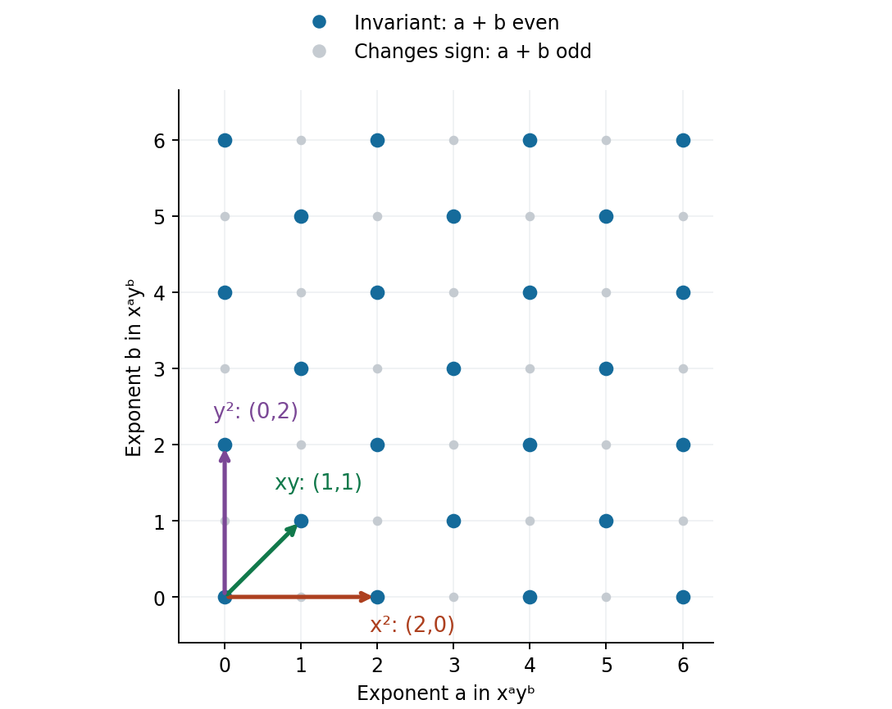

Invariants of finite groups and Noether's degree bound
Written by GPT-6.1 Sol (OpenAI) in Codex, Ultra setting, October 2026. Self-checked by the writing AI, GPT-6.1 Sol (OpenAI), in this Codex instance at Ultra. Public domain (CC0).
A group action identifies points, but polynomial functions need not forget those identifications. The invariant ring consists of the functions that do. For finite groups we can find these functions by averaging, bound the degrees needed to generate them, and count them degree by degree. The degree bound is useful because it turns an unbounded search into a finite linear algebra problem.
We assume elementary group representations and polynomial rings. The Hilbert basis theorem used below is proved in Noetherian and Artinian rings, Theorem 2.1, in Commutative algebra for geometry. The averaging argument works whenever the group order is invertible in the field. The orbit-resolvent proofs begin in characteristic zero; section 3 then proves the degree bound whenever the group order is invertible. Molien's formula is written over the complex numbers. Noether's original paper and the modern references credited below guided the subject coverage; the core proofs are supplied here. Section 5 proves Schmid’s characterization of equality, with the group-theoretic and zero-sum reductions supplied in full, then proves modular unboundedness for every group whose order is divisible by the characteristic.
1. Averaging without losing multiplication by invariants
Let a finite group \(G\) act linearly on a finite-dimensional vector space \(V\) over \(k\). Put \(A=k[V]=\operatorname{Sym}(V^*)\), with \((g\cdot f)(v)=f(g^{-1}v)\), and put \(B=A^G\). The action preserves degree, so \(B=\bigoplus_{d\geq0}B_d\).
Theorem 1.1 (Reynolds operator). If \(h=|G|\) is invertible in \(k\), then \[ \rho(f)=\frac1h\sum_{g\in G}g\cdot f \] is a degree-preserving projection \(A\to B\). For \(b\in B\), it satisfies \(\rho(bf)=b\rho(f)\).
Proof. Left multiplication permutes the summands, so \(\rho(f)\) is invariant. For invariant \(f\), every summand equals \(f\), hence \(\rho(f)=f\). This proves projection and idempotence. Each group element preserves degree. Finally \(g\cdot(bf)=b(g\cdot f)\), and summing proves the asserted linearity. This is linearity over the invariant ring, not multiplicativity of \(\rho\). For the sign action on \(k[x]\), \(\rho(x)=0\) but \(\rho(x^2)=x^2\). \(\square\)
Theorem 1.2 (finite generation). Under the same hypothesis, \(B\) is generated by finitely many homogeneous invariants.
Proof. Let \(I=AB_+\), the ideal generated by all positive-degree homogeneous invariants. The Hilbert basis theorem makes \(I\) finitely generated. A finite set of generators for this ideal uses only finitely many of its original invariant generators; consequently there are homogeneous \(f_1,\ldots,f_s\in B_+\) with \(I=(f_1,\ldots,f_s)\). For \(b\in B_d\), \(d>0\), write \(b=\sum_i a_i f_i\). Taking the degree \(d\) part lets us choose \(a_i\) homogeneous of degree \(d-\deg f_i\), with a negative degree interpreted as zero. Apply \(\rho\): \[ b=\sum_i\rho(a_i)f_i. \] Each nonzero \(\rho(a_i)\) has degree less than \(d\). Induction on \(d\), starting with \(B_0=k\), gives \(B=k[f_1,\ldots,f_s]\). \(\square\)
The proof explains existence but supplies no numerical limit on the degrees of the \(f_i\). Noether's argument supplies that limit by studying the finite orbit of one linear form.
2. A finite orbit as a symmetric-function problem
For \(h\) vector variables \(y_1,\ldots,y_h\in k^n\), let the symmetric group permute the vectors, leaving the coordinates within each vector in place. For a multi-index \(\alpha\in\mathbb N^n\), write \[ y_i^\alpha=\prod_j y_{ij}^{\alpha_j},\qquad p_\alpha=\sum_{i=1}^h y_i^\alpha. \]
Theorem 2.1 (multisymmetric generation). In characteristic zero the invariant ring for these permutations is generated by the \(p_\alpha\) with \(1\leq|\alpha|\leq h\).
Proof. First allow all positive \(|\alpha|\). For nonzero multi-indices \(\alpha_1,\ldots,\alpha_r\), define \[ M(\alpha_1,\ldots,\alpha_r) =\sum_{i_1,\ldots,i_r\ \mathrm{distinct}} y_{i_1}^{\alpha_1}\cdots y_{i_r}^{\alpha_r}. \] Each such \(M\) is the corresponding monomial orbit sum multiplied by the product of the factorials of the multiplicities of repeated multi-indices. Those nonzero integers are invertible in \(k\), so conversely every orbit sum is a scalar multiple of an \(M\). Thus the \(M\)'s span all invariants. Multiplying by a power sum gives the exact identity \[ p_\beta M(\alpha_1,\ldots,\alpha_r) =M(\beta,\alpha_1,\ldots,\alpha_r) +\sum_{j=1}^r M(\alpha_1,\ldots,\alpha_j+\beta,\ldots,\alpha_r). \] The summands on the right separate whether the index contributed by \(p_\beta\) is new or coincides with the \(j\)-th index. Induction on the number of occupied rows expresses every \(M\) as a polynomial in power sums.
Now introduce auxiliary variables \(u_1,\ldots,u_n\) and set \(\ell_i=\sum_j u_jy_{ij}\). Write \(s_d(u)=\sum_i\ell_i^d\). To derive Newton's identities, set \(E(T)=\prod_i(1+\ell_iT)=\sum_r e_rT^r\). Formal differentiation gives \(E'(T)/E(T)=\sum_i\ell_i/(1+\ell_iT)=\sum_{a\geq1}(-1)^{a-1}s_aT^{a-1}\). Multiplying by \(E(T)\) and comparing the coefficient of \(T^{r-1}\) gives \[ r e_r=\sum_{a=1}^r(-1)^{a-1}e_{r-a}s_a,\qquad e_0=1. \] Since each \(\ell_i\) is a root of \(T^h-e_1T^{h-1}+\cdots+(-1)^he_h\), summing after multiplication by \(\ell_i^{d-h}\) expresses every \(s_d\), \(d>h\), in these first \(h\) power sums. But \[ s_d(u)=\sum_{|\alpha|=d}\binom d\alpha p_\alpha u^\alpha. \] Comparing coefficients shows that every \(p_\alpha\) of degree greater than \(h\) is a polynomial in the \(p_\beta\) of degree at most \(h\). Division by the nonzero multinomial coefficient is valid in characteristic zero. \(\square\)
3. Two generating sets of bounded degree
Theorem 3.1 (Noether's bound). If \(\operatorname{char}k=0\), then \[ k[V]^G=k[\rho(x^\alpha):1\leq|\alpha|\leq h],\qquad h=|G|. \] In particular, invariants of degree at most \(h\) generate the invariant ring.
First proof: the orbit resolvent. Apply Theorem 2.1 to the \(h\) vectors \(g^{-1}v\). For every invariant \(f\), the multisymmetric polynomial \(h^{-1}\sum_i f(y_i)\) specializes to \(f(v)\). Introduce \[ \Phi(z,u)=\prod_{g\in G}(z-\langle u,g^{-1}v\rangle) =z^h+\sum_{r=1}^h(-1)^re_r(u)z^{h-r}. \] Each coefficient of \(e_r(u)\) in \(u\) is an invariant of degree \(r\) in \(v\), because \(G\) permutes the factors. Newton's identities express all orbit power sums as polynomials in these coefficient invariants, so they generate \(B\). Conversely, the same identities express each \(e_r(u)\) in the orbit power sums of degree at most \(h\). Their coefficients are scalar multiples of \(\rho(x^\alpha)\). Thus the resolvent coefficients and the indicated averages generate the same algebra. \(\square\)
Second proof: one-row power sums. This argument does not need the full multisymmetric theorem. Averaged monomials span \(B\), since applying \(\rho\) to the monomial expansion of \(f\in B\) returns \(f\). Set \[ S_d(u)=\sum_g\langle u,g^{-1}v\rangle^d =h\sum_{|\alpha|=d}\binom d\alpha\rho(x^\alpha)u^\alpha. \] Newton's identities express \(S_d\), \(d>h\), in \(S_1,\ldots,S_h\). Taking the coefficient of each \(u^\alpha\) and dividing by \(h\binom d\alpha\) expresses every high-degree averaged monomial in the lower-degree averages. These span all invariants, proving the result. Noether credits the substance of this second argument to E. Fischer. \(\square\)
Reference: Noether, Der Endlichkeitssatz der Invarianten endlicher Gruppen, parts 1, 2 and 4.
Both arguments divide by integers besides \(h\). The following ideal identity removes that restriction. Credit: Fogarty, Calculations, equations (2)–(3); Fleischmann independently established the bound.
Lemma 3.2. For a \(G\)-stable ideal \(\mathfrak m\subset A\), let \(J=A(\mathfrak m\cap A^G)\). Then \(h\mathfrak m^h\subseteq J\).
Proof. Choose \(f_\gamma\in\mathfrak m\), indexed by \(G\). Each product below has its \(\gamma=\sigma\) factor zero: \[ 0=\sum_{\sigma\in G}\prod_{\gamma\in G} \bigl(f_\gamma-\sigma^{-1}\gamma(f_\gamma)\bigr) =\sum_{S\subseteq G}(-1)^{|S|} \Bigl(\prod_{\gamma\notin S}f_\gamma\Bigr) \operatorname{Tr}\Bigl(\prod_{\gamma\in S}\gamma(f_\gamma)\Bigr). \] For nonempty \(S\), the transfer is invariant and belongs to \(\mathfrak m\). These terms lie in \(J\). The empty-subset term is \(h\prod_\gamma f_\gamma\). Such products generate \(\mathfrak m^h\). \(\square\)
Theorem 3.3 (non-modular bound). If \(h\) is invertible in \(k\), invariants of degrees at most \(h\) generate \(B\).
Proof. Apply the lemma with \(\mathfrak m=A_+\). Then \(A_{\geq h}\subset J=AB_+\), so \(J\) is generated by its pieces of degrees at most \(h\). Express bases of these pieces using homogeneous positive-degree invariants; taking homogeneous components retains only invariant factors of degree at most \(h\). The resulting finite list generates \(J\). The averaging and degree induction in Theorem 1.2 makes it generate \(B\). \(\square\)
4. Counting invariants: Molien's formula
The Hilbert series \(H_B(t)=\sum_{d\geq0}\dim_{\mathbb C}B_d\,t^d\) records the dimension of each space of homogeneous invariants. It can check a proposed set of generators and relations, but it cannot by itself prove that proposed generators generate: an inclusion and equality of graded dimensions are both needed.
Theorem 4.1 (Molien). Over \(\mathbb C\), \[ H_B(t)=\frac1h\sum_{g\in G}\frac1{\det(I-tg\mid V)}. \]
Proof. A projection has eigenvalues zero and one, so its trace on \(A_d\) equals its rank \(\dim B_d\). Hence \(\dim B_d=h^{-1}\sum_g\operatorname{tr}(g\mid\operatorname{Sym}^dV^*)\). A finite-order complex matrix is diagonalizable, since its minimal polynomial divides \(T^h-1\), which has no repeated roots. If its eigenvalues on \(V^*\) are \(\lambda_1,\ldots,\lambda_n\), then the monomial basis gives the formal-power-series identity \[ \sum_{d\geq0}\operatorname{tr}(g\mid\operatorname{Sym}^dV^*)t^d =\prod_j\left(\sum_{a\geq0}(t\lambda_j)^a\right) =\frac1{\det(I-tg^{-1}\mid V)}. \] Sum over \(G\) and reindex by inversion. All manipulations are coefficientwise finite, so analytic convergence is unnecessary. \(\square\)
4.1 The sign action on two coordinates
For \(g=-I\), a monomial \(x^ay^b\) is invariant exactly when \(a+b\) is even. If both exponents are even, it is a product of \(x^2,y^2\); if both are odd, it is \(xy\) times such a product. Thus \[ B=\mathbb C[u,v,w]/(v^2-uw),\qquad (u,v,w)=(x^2,xy,y^2). \] There are no further relations: after reduction by \(v^2=uw\), monomials \(u^aw^b\) and \(vu^aw^b\) map to distinct monomials in \(x,y\). The Hilbert series is \[ \frac12\left(\frac1{(1-t)^2}+\frac1{(1+t)^2}\right) =\frac{1+t^2}{(1-t^2)^2}. \]

The blue exponent pairs form the monoid generated by the three arrows. The relation twice (1,1) equals (2,0)+(0,2) becomes \(v^2=uw\). The diagram displays only exponents from zero through six; the argument applies to the entire nonnegative lattice. Editable vector diagram.
The two terms in the numerator reflect the basis \(1,v\) over \(\mathbb C[u,w]\).
4.2 Opposite characters of a cyclic group
Let \(G=C_r\) act by \((x,y)\mapsto(\zeta x,\zeta^{-1}y)\), with \(\zeta\) primitive. The invariant monomials have \(a-b\equiv0\pmod r\). Removing \((xy)^{\min(a,b)}\) leaves a power of \(x^r\) or \(y^r\), so \[ B=\mathbb C[u,v,z]/(uv-z^r),\qquad (u,v,z)=(x^r,y^r,xy). \] Reduction to monomials containing at most one of \(u,v\) proves the displayed relation is the entire kernel. Therefore \[ H_B(t)=\frac{1-t^{2r}}{(1-t^r)^2(1-t^2)} =\frac{1+t^r}{(1-t^r)(1-t^2)}. \] For \(r=3\), this is \((1+t^3)/((1-t^2)(1-t^3))\); it agrees with the Molien average of \(I,\operatorname{diag}(\zeta,\zeta^{-1}),\operatorname{diag}(\zeta^{-1},\zeta)\).
4.3 Permuting coordinates
For \(S_n\) acting by coordinate permutations, the invariant ring is \(\mathbb C[e_1,\ldots,e_n]\), where \(e_j\) is the elementary symmetric polynomial of degree \(j\). Here is an algebraic proof that also works over every field. The lexicographically greatest monomial of a symmetric polynomial has exponent sequence \(a_1\geq\cdots\geq a_n\). The product \[ e_1^{a_1-a_2}e_2^{a_2-a_3}\cdots e_n^{a_n} \] has that same leading monomial with coefficient one. Subtract its scalar multiple and repeat within the finite set of monomials of the original total degree. This expresses the polynomial in the \(e_j\). Distinct products have distinct leading exponent sequences, proving algebraic independence. Thus \[ H_B(t)=\prod_{j=1}^n(1-t^j)^{-1}. \] The degrees needed are at most \(n\), which is much smaller than \(n!\) when \(n\geq3\). Molien's summand for a permutation with cycle lengths \(c_1,\ldots,c_s\) is \(\prod_j(1-t^{c_j})^{-1}\), since the eigenvalues of each cycle are all \(c_j\)-th roots of unity. This also computes the series by cycle type.
4.4 The quaternion group
Take the matrices \(r=\operatorname{diag}(i,-i)\) and \(s(x,y)=(y,-x)\). They generate \(Q_8\). Its eight elements consist of \(I,-I\) and six matrices with eigenvalues \(i,-i\). Molien therefore gives \[ H_B(t)=\frac18\left(\frac1{(1-t)^2}+\frac1{(1+t)^2} +\frac6{1+t^2}\right) =\frac{1+t^6}{(1-t^4)^2}. \] The following invariants realize that series: \[ a=x^4+y^4,\qquad b=x^2y^2,\qquad c=xy(x^4-y^4),\qquad c^2=b(a^2-4b^2). \] To prove generation, first take invariants of \(\langle r\rangle\). They form \(\mathbb C[u,v,z]/(uv-z^4)\), with \(u=x^4,v=y^4,z=xy\). The remaining transformation swaps \(u,v\) and sends \(z\) to \(-z\). In the monomial normal form from the cyclic example, its invariant combinations with an even power of \(z\) are \(z^{2j}(u^a+v^a)\); those with an odd power are \(z^{2j+1}(u^a-v^a)\). Symmetric powers are polynomials in \(u+v,uv\), and \((u^a-v^a)/(u-v)\) is symmetric. Thus every invariant is in \(\mathbb C[a,b]+c\mathbb C[a,b]\). The displayed relation reduces all expressions to that form. The degrees of the two summands are respectively zero and two modulo four, so they are independent. Finally \(a,b\) are algebraically independent: in lexicographic order with \(x>y\), the leading monomial of \(a^pb^q\) is \(x^{4p+2q}y^{2q}\). Different pairs \((p,q)\) give different leading monomials, so no polynomial relation exists. This proves the presentation and the series. The necessary generator degrees are \(4,4,6\), below the bound eight.
5. Rational functions and the limits of the bound
Proposition 5.1. For a finite group acting on a domain \(A\), \[ \operatorname{Frac}(A)^G=\operatorname{Frac}(A^G). \]
Proof. Write an invariant rational function as \(q=a/b\), \(b\ne0\), and set \(N=\prod_g g(b)\). The nonzero element \(N\) is invariant. Since the identity factor is \(b\), the product \(qN=a\prod_{g\ne1}g(b)\) lies in \(A\), and it is invariant as a product of two invariant rational functions. Thus \(q=(qN)/N\) is a quotient of invariant elements. The opposite inclusion is immediate. \(\square\)
If a cyclic group of order \(r\) acts faithfully on a line through a primitive \(r\)-th root of unity, then \(k[x]^G=k[x^r]\). No positive invariant of smaller degree exists. The bound is therefore sharp. More generally, define \(\beta(G,V)\) as the greatest degree of an element in a minimal homogeneous algebra generating set, equivalently the greatest degree occurring in \(B_+/B_+^2\). Set \(\beta(G,V)=0\) when \(B=k\). Define \(\beta(G)\) as its supremum over representations. The equality case requires a theorem about all representations; the following argument proves it.
When the group-wide bound is attained
The number \(\beta(G,V)\) measures a particular representation. Schmid's theorem concerns \(\beta(G)\), the supremum over all finite-dimensional representations. We now prove its noncyclic direction. The subgroup and quotient reductions are due to Schmid; the proof below supplies their arguments and the two elementary base cases. We work over an algebraically closed field of characteristic zero until the final descent paragraph.
Lemma 5.2 (relative degree bounds). For \(H\leq G\) and \(N\triangleleft G\), \[ \beta(G)\leq [G:H]\beta(H),\qquad \beta(G)\leq\beta(N)\beta(G/N). \tag{S1} \]
Proof. Put \(I=k[V]^H\), \(R=k[V]^G\), and \(r=[G:H]\). If \(f\in I_+\), its orbit polynomial, with one factor for each left coset of \(H\), has coefficients in \(R\). Substituting \(f\) into it gives \[ f^r\in I_+R_++R_+. \] Here a product of subspaces means the span of their products. Polarizing this equality proves \[ I_+^r\subseteq I_+R_++R_+, \qquad I_+^{r+1}\subseteq I_+R_+. \tag{S2} \] Explicitly, \(r!f_1\cdots f_r\) is the alternating sum of the \(r\)-th powers of the sums over all subsets of \(\{f_1,\ldots,f_r\}\); the subspace on the right is closed under addition. The second inclusion follows by multiplication by \(I_+\). The relative average \[ \rho_H^G(f)=\frac1r\sum_{gH\in G/H}g f \] maps \(I\) onto \(R\) and is \(R\)-linear. Thus (S2) also gives \[ \rho_H^G(I_+^{r+1})\subseteq R_+^2. \tag{S3} \] If \(I\) has generators of degrees at most \(b=\beta(H,V)\), every homogeneous element of degree greater than \(rb\) is a sum of products of at least \(r+1\) of these positive-degree generators. For an element of \(R\), apply (S3) to that expression. It is decomposable in \(R\). Hence \(\beta(G,V)\leq rb\); taking suprema proves the first inequality.
For the second, take the finite-dimensional, graded, \(G/N\)-stable space \(W=\bigoplus_{1\leq d\leq\beta(N,V)}k[V]^N_d\). Its inclusion gives a surjection \(\operatorname{Sym}(W)\to k[V]^N\). Averaging lifts every \(G/N\)-invariant of the target to an invariant of the source. The source invariant ring is generated in ordinary symmetric degree at most \(\beta(G/N)\). Each source variable maps to an element of degree at most \(\beta(N,V)\); therefore the images generate \(R\) in degrees at most their product. If a generator has several original degrees, take its homogeneous parts; the group preserves those degrees and the bound remains the same. This proves the second inequality after taking suprema. Representations with invariant ring \(k\) cause no exception. \(\square\)
Lemma 5.3 (maximal zero-sum sequences). In a finite abelian group \(A\) of order \(n\), a sequence with sum zero and no nonempty proper zero-sum subsequence has length at most \(n\). If its length is \(n\), all its entries are the same element, of order \(n\). Consequently \[ \beta(A)<|A|\quad\text{when }A\text{ is not cyclic}. \tag{S4} \]
Proof. In any ordering of a minimal zero-sum sequence of length \(s\), the \(s-1\) proper partial sums are distinct and nonzero. Equality of two of them, or a zero partial sum, would exhibit a proper zero-sum subsequence. Thus \(s\leq n\). If \(s=n\), the proper partial sums exhaust \(A\setminus\{0\}\). Interchange the first two entries \(a,b\). Only the first partial sum changes, from \(a\) to \(b\). Both lists must exhaust the same set, so \(a=b\). Any two entries may be placed first, so all entries coincide. Minimality says their common value has order exactly \(n\).
Choose an eigenbasis for an abelian-group representation. Its coordinate variables have weights in the character group \(\widehat A\), which is an abelian group of order \(n\). To verify that order directly, simultaneously diagonalize the commuting matrices of the regular representation. A joint eigenspace has dimension one: its coefficients are determined by its coefficient at the identity and its character. Conversely every character gives such an eigenvector. Thus exactly \(n\) characters occur. If \(\widehat A\) were cyclic, its generating character would have order \(n\), hence image of order \(n\), making \(A\) isomorphic to a cyclic group of roots of unity. So it is noncyclic when \(A\) is. Invariant monomials are precisely the monomials whose weight sequence sums to zero. Factoring off minimal zero-sum subsequences shows that they are generated by the minimal ones. The preceding equality case excludes degree \(n\). Therefore invariants of degrees at most \(n-1\) generate every invariant ring. \(\square\)
The nonabelian reduction uses only elementary finite-group theory. We include the needed group argument rather than assume a classification of minimal noncyclic groups.
Lemma 5.4 (the smallest nonabelian case). If a finite nonabelian group \(G\) has every proper subgroup cyclic and every quotient by a nontrivial proper normal subgroup cyclic, then \[ G\cong C_p\rtimes C_q, \qquad p,q\text{ prime},\quad q\mid p-1, \tag{S5} \] with a nontrivial action of \(C_q\) on \(C_p\).
Proof. We first justify the Sylow and transfer facts used here. If \(|G|=p^a m\) with \(p\nmid m\), let \(G\) act by left multiplication on the subsets of \(G\) of size \(p^a\). The number of subsets is prime to \(p\): the coefficient of \(T^{p^a}\) in \((1+T)^{p^a m}\equiv(1+T^{p^a})^m\pmod p\) is \(m\). Some orbit therefore has length prime to \(p\). Its stabilizer \(P\) has order divisible by \(p^a\); it acts freely on the stabilized subset, so its order also divides \(p^a\). Thus \(|P|=p^a\). For any \(p\)-subgroup \(Q\), its action on the \(m\) left cosets of \(P\) has a fixed coset, since every nontrivial orbit has size divisible by \(p\). Hence \(Q\) is contained in a conjugate of \(P\); subgroups of order \(p^a\) are consequently conjugate. These are the precise Sylow facts needed below.
Suppose an abelian Sylow subgroup \(P\) satisfies \(P\subseteq Z(N_G(P))\). If \(u,v\in P\) are conjugate, say \(v=gug^{-1}\), then \(P\) and \(gPg^{-1}\) are Sylow subgroups of \(C_G(v)\). Conjugacy there supplies \(c\in C_G(v)\) with \(cg\in N_G(P)\). This element centralizes \(P\), so \(u=cgug^{-1}c^{-1}=cvc^{-1}=v\). Thus conjugation between elements of \(P\) cannot change an element.
Choose representatives \(t\) for the right cosets \(P\backslash G\). If \(Ptg=Pt'\), put \(h(t,g)=tgt'^{-1}\in P\). The transfer \[ v_P(g)=\prod_t h(t,g)\in P \] is a homomorphism: the equality \(h(t,gh)=h(t,g)h(t',h)\), followed by multiplication over the permuted coset representatives, proves it because \(P\) is abelian. For \(u\in P\), divide its permutation of these right cosets into cycles. A cycle of length \(l\) contributes \(tu^lt^{-1}\in P\), which is \(u^l\) by the preceding conjugacy argument. Hence \(v_P(u)=u^{[G:P]}\). Since the exponent is prime to \(p\), this is an automorphism of the abelian \(p\)-group \(P\). Transfer is surjective and its kernel is a normal subgroup of order \(|G|/|P|\).
Now \(G\) cannot be simple. If it were, each Sylow subgroup \(P\) would be proper, hence cyclic, and its normalizer would be proper, hence cyclic. A normalizer equal to \(G\) would already make \(P\) a nontrivial proper normal subgroup. A cyclic normalizer centralizes \(P\); transfer therefore gives a nontrivial proper normal kernel whenever \([G:P]>1\). If \(G\) were a \(p\)-group, its center would instead give a nontrivial proper normal subgroup: the conjugation class equation makes the center nontrivial, and a simple \(p\)-group must have order \(p\), hence be abelian. In every case simplicity is impossible.
Take a nontrivial proper minimal normal subgroup \(N\). It is cyclic because it is proper, and has prime order \(p\), since a proper nontrivial characteristic subgroup of a cyclic group would contradict minimality. The quotient \(G/N\) is cyclic, of order \(m\). Lift a generator to \(x\); then \(G=\langle N,x\rangle\). Conjugation by \(x\) is nontrivial on \(N\), since otherwise \(G\) is abelian. Let its order be \(d>1\). We have \(x^m\in N\), and this element is fixed by conjugation by \(x\). A nontrivial automorphism of the prime-order group \(N\) fixes only the identity. Thus \(x^m=1\), and \(x\) has order exactly \(m\). In particular \(\langle x\rangle\cap N=1\) and \(G=N\rtimes\langle x\rangle\).
The subgroup \(\langle x^d\rangle\) is central. If it were nontrivial, quotienting by it would leave a nonabelian quotient, contrary to the hypothesis. Hence \(m=d\), so \(m\mid p-1\). If \(m\) were composite, an element of prime order \(q\) in \(\langle x\rangle\) would act nontrivially on \(N\), and these two subgroups would generate a nonabelian proper subgroup. Therefore \(m=q\) is prime, proving (S5). \(\square\)
Lemma 5.5 (strictness for a prime semidirect product). For the group in (S5), every characteristic-zero representation satisfies \[ \beta(G,V)\leq pq-1. \tag{S6} \]
Proof. Put \(N=C_p\), choose a generator \(b\) of \(C_q\), and let \(I=k[V]^N\), \(R=k[V]^G\). Choose an \(N\)-eigenbasis for the coordinate variables; its weights belong to \(\mathbb Z/p\). Conjugation by \(b\) permutes nonzero weights in orbits of length \(q\). Write \(\tau(f)=\sum_{j=0}^{q-1}b^jf\). Formula (S3), with \(H=N\), says \[ \tau(I_+^{q+1})\subseteq R_+^2. \tag{S7} \]
Every sequence of \(p\) weights has a nonempty zero-sum subsequence: among the \(p+1\) partial sums including zero, two coincide. By Lemma 5.3 a minimal zero-sum sequence of length \(p\) consists of one repeated nonzero weight. Consequently any \(N\)-invariant monomial \(m\) of degree \(pq\) which either uses a weight-zero variable or uses two different weights has a zero-sum factor of degree at most \(p-1\). In the second case, select \(p\) entries containing two different weights and take a minimal zero-sum subsequence within them; it cannot have length \(p\). After removing the short factor, the remaining weight sum is still zero and its length is at least \((q-1)p+1\). Remove \(q-1\) further zero-sum factors, each of length at most \(p\); at every step enough entries remain to do this. A nonempty zero-sum factor remains at the end. Thus \(m\) is a product of at least \(q+1\) positive-degree \(N\)-invariants. By (S7), \(\tau(m)\) is decomposable in \(R\).
It remains to treat \(m\) using just one nonzero weight \(a\). Partition its \(pq\) variable occurrences into \(q\) monomials \(u_1,\ldots,u_q\) of degree \(p\). Each \(u_i\) is \(N\)-invariant. Introduce scalar indeterminates \(t_i\), fixed by the group, and put \(f=\sum_i t_i u_i\). For the \(q\) conjugates \(b^jf\), write \(e_i\) for their elementary symmetric functions and \(s_i=\tau(f^i)\) for their power sums. Newton's identity from Section 2 gives \[ s_q+(-1)^q q e_q\in R_+^2[t_1,\ldots,t_q]. \tag{S8} \] Indeed, each other term is a product of two positive-degree invariants.
Every monomial in \(e_q=\prod_{j=0}^{q-1}b^jf\) uses variables from the \(q\) distinct nonzero weights in the orbit of \(a\), with \(p\) occurrences from each weight. This remains true if \(b\) acts by linear combinations inside the weight spaces; no monomial basis for the whole group is assumed. Each such monomial belongs to \(I_+^{q+1}\) by the preceding short-factor argument. There is also a direct factorization in this particular case: write the weights as \(a,ra,\ldots,r^{q-1}a\), where \(r\) has order \(q\) modulo \(p\). Their sum is zero. Taking one variable from each weight gives a zero-sum packet of length \(q\); the monomial splits into \(p>q\) such packets. Each coefficient of \(e_q\) is \(G\)-invariant. Averaging it with \(\tau/q\) and using (S7) shows that it lies in \(R_+^2\). Formula (S8) now puts \(s_q\) in that same subspace. The coefficient of \(t_1\cdots t_q\) in \(s_q\) is exactly \(q!\tau(m)\), so \(\tau(m)\) is decomposable as well.
Transfers of \(N\)-invariant monomials span \(R\). We have proved \(R_{pq}\subseteq R_+^2\). Noether's bound already excludes indispensable generators of degrees greater than \(pq=|G|\); the remaining degree \(pq\) has just been excluded. This proves (S6). \(\square\)
Theorem 5.6 (Schmid's equality characterization). For every finite group over a field of characteristic zero, \[ \beta(G)=|G|\quad\Longleftrightarrow\quad G\text{ is cyclic}. \tag{S9} \]
Proof. Over an algebraically closed field, cyclic sharpness is the faithful one-dimensional example above. For the converse, induct on \(|G|\). A noncyclic proper subgroup gives strictness by the first inequality in (S1) and induction. A noncyclic proper quotient gives strictness by the second inequality in (S1), induction and Noether's bound for the kernel. If neither exists, a nonabelian \(G\) satisfies Lemma 5.4 and is handled by Lemma 5.5. An abelian noncyclic \(G\) is handled by Lemma 5.3. Thus \(\beta(G)\leq|G|-1\) for every noncyclic \(G\).
For a characteristic-zero field \(k\) which is not algebraically closed, extend to an algebraic closure \(K\). In each degree, invariance is the kernel of the finitely many linear maps \(g-1\), so \(K\otimes_k k[V]^G=K[V_K]^G\). The same equality holds for the space of products of positive-degree invariants, since multiplication commutes with extension of scalars. Therefore the graded indecomposable spaces \(B_+/B_+^2\) commute with this extension, proving the upper bound over \(k\). For a cyclic group of order \(h\), use its regular representation over \(k\). After extension to \(K\), it contains a faithful character as a direct summand: the usual eigenvectors \(\sum_{j=0}^{h-1}\zeta^{-ij}e_j\) diagonalize the cyclic permutation. Restriction to the faithful character line is a surjection of invariant rings, with a section from projection onto that summand. Its degree-\(h\) indecomposable cannot come from lower degrees. Thus the regular representation has a nonzero degree-\(h\) indecomposable over \(K\), and hence over \(k\). Noether's bound proves equality. This also includes the trivial group, whose faithful regular line has generator degree one. \(\square\)
The theorem gives a uniform strict inequality for noncyclic groups; it does not assert that every representation of a cyclic group attains the bound. For \(C_2\times C_2\), degree-four minimal zero-sum sequences are impossible. For a concrete nonabelian example let \(C_3\rtimes C_2\) act by \(a(x,y)=(\zeta x,\zeta^{-1}y)\), \(b(x,y)=(y,x)\). Its cyclic-subgroup invariants are \(k[xy,x^3,y^3]\); averaging the involution, or using symmetric polynomials in \(x^3,y^3\), gives \(k[xy,x^3+y^3]\). The top-degree reduction used above appears explicitly as \[ x^6+y^6=(x^3+y^3)^2-2(xy)^3. \] The norm term \(x^3y^3\) consists of three weight-zero pairs. This is the packet factorization in the proof, while the displayed equality is its quadratic Newton identity.
When the characteristic divides the group order, averaging by \(1/h\) is unavailable and the degree bound can fail. Richman proves that, for a group whose order is divisible by the characteristic, generator degrees can be unbounded as the representation varies. Finite generation for each fixed finite-dimensional representation still holds; it is proved in the later lesson Finiteness for finite groups in every characteristic.
Why modular degrees have no uniform bound
For a graded invariant ring \(B\), a positive-degree invariant has a necessary generator class when its image in \(B_+/(B_+)^2\) is nonzero. A degree-\(d\) class of this kind cannot be generated by invariants of smaller degree: any expression in smaller homogeneous positive-degree generators lies in \((B_+)^2\) in degree \(d\).
Theorem 5.7 (modular unboundedness). Suppose \(G\) has order \(h\), \(k\) has positive characteristic dividing \(h\), and \(m\geq1\). On \(m\) copies of the regular permutation representation, of dimension \(mh\), the invariant ring needs a generator of degree at least \(m\). Consequently no representation-independent degree bound exists for this fixed group in this characteristic.
Proof. Work in the polynomial ring \[ A=k[x_{i,g}:1\leq i\leq m,\ g\in G],\qquad a(x_{i,g})=x_{i,ag}. \] It has the multigrading recording total degree in each row \(i\); the group preserves that grading.
For a nonempty subset \(S\) of rows, let \(B_S\) be the invariant subspace of multidegree one in every row in \(S\), zero elsewhere. Its monomials are \(\prod_{i\in S}x_{i,g_i}\). The action on these monomials is free: an element fixing the monomial must fix the label in any one nonempty row, so is the identity. Every orbit therefore has \(h\) distinct monomials. Invariance of a polynomial says its coefficients are constant on each orbit, regardless of characteristic. Hence the sums \(O\) of the monomials in individual orbits form a basis of \(B_S\).
Define a linear functional \[ \ell_S:B_S\longrightarrow k,\qquad \ell_S(O)=1 \] on this basis. Take a disjoint partition \(S=S_1\sqcup S_2\) with both parts nonempty. If \(M_1,M_2\) are representative monomials for orbit sums on those parts, then \[ \left(\sum_{a\in G}aM_1\right) \left(\sum_{b\in G}bM_2\right) =\sum_{t\in G}\sum_{a\in G}a(M_1\,tM_2). \tag{5} \] Indeed write \(b=at\). The \(h\) inner orbit sums are distinct: equality of the orbits for \(t,t'\) would give an \(a\) fixing the labels on \(S_1\), hence \(a=1\), and then \(t=t'\) from the labels on \(S_2\). Each inner sum is an orbit basis vector of \(B_S\). Applying \(\ell_S\) to (5) gives \(h=0\) in \(k\). By bilinearity it annihilates every product from \(B_{S_1}B_{S_2}\).
Now take \(S=\{1,\ldots,m\}\). The multidegree-\((1,\ldots,1)\) component of \((B_+)^2\) is spanned by those products over all disjoint nonempty partitions. To see this, decompose each factor into its invariant row-homogeneous components. Nonnegative degrees adding to one in every row must be zero or one, so each contributing pair has exactly such disjoint supports. Thus \(\ell_S\) annihilates this entire component.
The invariant \[ T_m=\sum_{g\in G}\prod_{i=1}^m x_{i,g} \] is one orbit sum, so \(\ell_S(T_m)=1\). Its class in \(B_+/(B_+)^2\) is nonzero. It has degree \(m\), proving the required lower bound. When \(m=1\), there are no disjoint nonempty partitions and the same conclusion is immediate. Since \(m\) is arbitrary, the degrees are unbounded; taking \(m>h\) directly disproves the modular analogue of the Noether bound. \(\square\)
The invariant rings in this theorem are still finitely generated for each fixed \(m\), by Theorem 1.2 of Finiteness for finite groups in every characteristic. There is no conflict: finiteness for each representation does not give one degree bound for all representations.
Richman's 1996 paper establishes modular lower bounds in terms of representation dimension. The proof above gives the explicit linear lower bound \(\dim(V)/|G|\) on these regular-copy representations and proves the full unboundedness assertion without importing its proof from that paper. The characteristic hypothesis enters at the exact equality \(\ell_S(O_1O_2)=|G|=0\).
6. Exercises
Exercise 6.1 (easy). For the sign action on \(k[x,y]\), with \(\operatorname{char}k\ne2\), find the invariants of degree four and verify generation in degree two.
Solution. The degree-four basis is \(x^4,x^3y,x^2y^2,xy^3,y^4\). They are respectively \(u^2,uv,v^2=uw,vw,w^2\) in the notation of section 4.1. Every even-degree invariant monomial reduces the same way; odd-degree invariant spaces vanish. Hence degree two suffices and is necessary.
Exercise 6.2 (medium). Compute the Molien series and a presentation for \(C_4\) acting by \(\operatorname{diag}(i,-i)\).
Solution. The four summands are \((1-t)^{-2},(1+t)^{-2}\) and twice \((1+t^2)^{-1}\). Their average is \((1+t^4)/((1-t^2)(1-t^4))\). The ring is \(\mathbb C[x^4,y^4,xy]\), with the single relation \(x^4y^4=(xy)^4\). The monomial reduction in section 4.2 proves both generation and absence of other relations.
Exercise 6.3 (medium). Prove sharpness on a faithful cyclic line, and determine the invariant ring for the pair of opposite faithful characters.
Solution. On the line, invariance of \(x^a\) is equivalent to \(r\mid a\); linear independence of monomials yields \(k[x^r]\). On two coordinates invariance means \(r\mid a-b\). If \(a\geq b\), write \(x^ay^b=(xy)^b(x^r)^{(a-b)/r}\), and use the analogous expression if \(b\geq a\). This gives the generators and relation of section 4.2. These arguments work whenever the field contains the primitive root, including non-modular positive characteristic.
Exercise 6.4 (medium). Find the rational invariant field for coordinate permutations, and give an invariant denominator for a general rational invariant.
Solution. Given denominator \(b\), use \(N=\prod_{\sigma\in S_n}\sigma(b)\) as in Proposition 5.1. Both numerator and denominator then belong to \(k[e_1,\ldots,e_n]\), by the leading-monomial proof in section 4.3. Hence the field is \(k(e_1,\ldots,e_n)\). No characteristic restriction is needed for this statement.
Exercise 6.5 (hard). Over \(\mathbb F_2\), let an involution exchange the variables \(x_j,y_j\), \(1\leq j\leq d\), with \(d\geq1\). Show that the transfer \(\operatorname{Tr}=1+s\) is not onto the degree-two invariants. Show also that there is no equivariant projection of the degree-two polynomial space onto its invariants.
Solution. The monomial \(x_1y_1\) is fixed. On every two-element monomial orbit, the transfer gives the sum of the two monomials; on a fixed monomial, it gives zero. Thus \(x_1y_1\) is outside its image. For the stronger assertion put \(a=x_1^2\). Then \((1+s)a=x_1^2+y_1^2\ne0\) is invariant. If an equivariant projection \(P\) existed, its value \(P(a)\) would be invariant, so \(P((1+s)a)=(1+s)P(a)=0\). But a projection onto invariants fixes \((1+s)a\), a contradiction. Failure of the transfer alone would not prove this stronger assertion; the equivariance argument does. A trivial modular action does admit the identity projection, so the conclusion concerns this representation.
References
- E. Noether, Der Endlichkeitssatz der Invarianten endlicher Gruppen, Mathematische Annalen 77 (1916), 89–92, parts 1–4. German and English editions.
- H. Kraft and C. Procesi, Classical Invariant Theory: A Primer (1996), section 1.6. Authors' freely available notes.
- P. Fleischmann, The Noether Bound in Invariant Theory of Finite Groups, Advances in Mathematics 156 (2000), 23–32. Published paper.
- J. Fogarty, On Noether's Bound for Polynomial Invariants of a Finite Group, Electronic Research Announcements 7 (2001), 5–7. Published paper.
- Schmid's theorem that the Noether number equals the group order only for cyclic groups, with the subgroup and quotient inequalities on which its proof rests (B. J. Schmid, 1991), is stated in Kraft–Procesi, section 1.6, and in Wehlau's survey below, Proposition 3.3 and Theorem 3.7.
- D. R. Richman, Invariants of Finite Groups over Fields of Characteristic p, Advances in Mathematics 124 (1996), 25–48. Published paper.
- Kraft–Procesi, section 1.6, Theorem 2 and its proof, also gives the computational route: the averages of the monomials of degree at most the group order generate the invariant ring, by Newton's power-sum identities.
- D. L. Wehlau, The Noether Number in Invariant Theory, C. R. Math. Rep. Acad. Sci. Canada 28 (2006), 39–62, Section 3, especially Proposition 3.3 and Theorem 3.7. Published survey. The survey records the subgroup/quotient induction and the prime semidirect base case; the complete arguments used here are supplied above.
- K. Cziszter and M. Domokos, Groups with Large Noether Bound, Annales de l’Institut Fourier 64 (2014), 909–944, Section 1.3, Proposition 1.6 and Corollary 1.8, for the relative-transfer framework and its wider nonmodular form. Primary preprint, version 5.